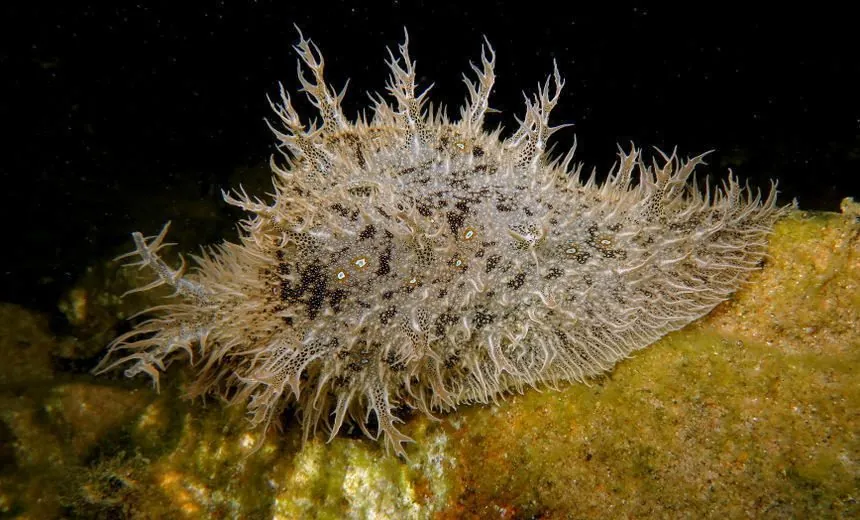

软体动物 · 动物界
蓝斑背肛海兔 Bursatella leachii

身体柔软、布满蓝绿色斑点和绒毛状突起的海兔，受惊时会喷出紫色墨汁，广泛分布于热带和亚热带浅海。
- 分类
- 门软体动物门纲腹足纲目无楯目科海兔科属背肛海兔属
- 栖息环境
- 热带和亚热带浅海的海草床、沙泥底和礁石间，水深通常不足十米
- 地理分布
- 全球热带和亚热带浅海，包括印度洋、太平洋和大西洋沿岸
- 保护级别
- 尚无保护级别；种群受近岸污染和海草床退化影响
物种志
蓝斑背肛海兔的身体柔软，呈长卵形，长约十至二十厘米，没有外壳，体表密布细长的绒毛状突起，颜色随环境变化，多为黄褐、绿褐或灰绿色，上面散布着蓝色或蓝绿色的斑点。头部有两对触角，像兔子的耳朵，海兔之名由此而来。它的肛门位于身体背侧后方，因而叫背肛海兔。受惊时它会喷出紫色或紫红色的墨汁，掩护自己逃走。
它广泛分布于全球热带和亚热带浅海，包括印度洋、太平洋和大西洋的沿岸，栖息在海草床、沙泥底和礁石间的浅水区，水深通常不足十米，常成群出现。它以蓝绿藻和丝状藻类为食，靠齿舌刮食，摄食的藻类色素会影响它的体色。它是雌雄同体的动物，繁殖时成群聚集，产下细长的胶质卵带，像一团团面条。目前尚无保护级别，种群受近岸污染和海草床退化影响。
形态与习性
- 食性刮食蓝绿藻和丝状藻类
- 体长约十至二十厘米，无外壳
- 体表密布绒毛状突起和蓝绿色斑点
- 防御受惊时喷出紫色或紫红色墨汁
- 繁殖雌雄同体，成群产下细长胶质卵带
- 栖息深度浅水区，水深通常不足十米
趣味知识
- 海兔头上的两对触角竖起来像兔耳朵，名字就是这么来的。
- 它没有外壳，靠体表的绒毛状突起和体色伪装成海藻。
- 受惊时它喷出的紫色墨汁能遮蔽视线，帮它趁机逃走。